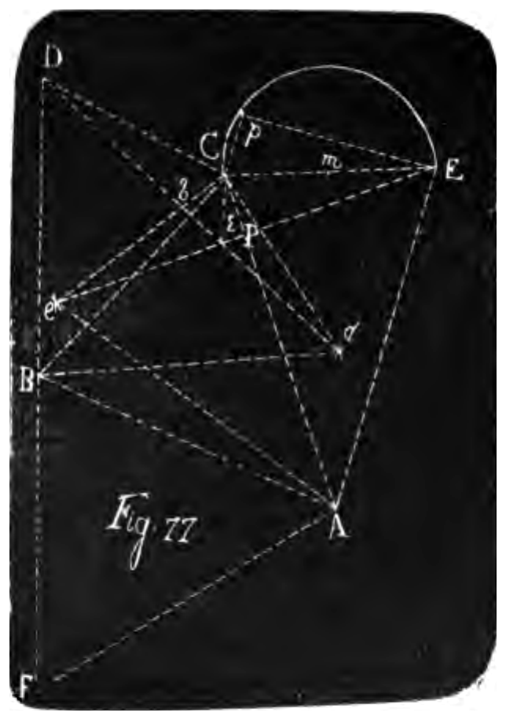

§§ 151–160: Dimostrazioni geometriche delle identità trigonometriche (Fig. 76–78)¶
LIBRO UNDECIMO — PROBLEMI VARJ
151. Prob. Data una scala \(LS\), trovare l’area del campo triangolare \(ABD\), e del campo quadrilatero \(ABCD\) (fig. 76).
Sol. Si faccia a \(AB = Ba\); a \(DA = Da\) (§ 11). Si portino sulla scala \(LS\) le distanze \(Aa\) e \(BD\) prese sul compasso, e si trovi essere per esempio \(Aa = 7\), \(BD = 8\). Si moltiplichino tra loro questi due numeri, e si pigli il quarto del prodotto \(= 14\). Questo numero esprimerà l’area del triangolo \(ABD\).

Se si voglia l’area del campo quadrilatero \(ABCD\), trovato, come qui sopra, il punto \(a\), si faccia a \(BC = Bc\), a \(DC = Dc\). Si trovino sulla scala le due distanze \(Aa\), \(Cc\), e sia per esempio \(Aa = 7\), \(Cc = 5\). Per la loro somma \(= 12\) si moltiplichi la \(BD\) trovata sulla scala per esempio \(= 8\). Del prodotto \(96\) si pigli la quarta parte \(24\). Questo numero esprimerà l’area del quadrilatero \(ABCD\).
Dim. La \(Aa\) è doppia della perpendicolare, che da \(A\) cade sopra la \(BD\) (§ 14). Ma l’area del triangolo \(ABD\) è eguale alla metà dell’area d’un parallelogrammo, che ha per base la \(BD\), e per altezza questa perpendicolare (41, lib. I). Dunque è eguale alla quarta parte del prodotto della \(Aa\) nella \(BD\). Egualmente l’area del triangolo \(BCD\) è eguale alla quarta parte del prodotto della \(Cc\) nella \(BD\). Dunque l’area del quadrilatero \(ABCD\) è eguale alla quarta parte della somma delle due parallele \(Aa\), \(Cc\) nella loro perpendicolare \(BD\).
152. Può servire questo problema a misurare l’area di tutto un disegno di un campo poligono, ripartendolo in tanti quadrilateri e triangoli coll’immaginarvi delle linee rette. Si potrebbero proporre anche altre maniere di ridurlo in trapezj, ma queste si possono, quando giovi, raccogliere facilmente dal metodo, col quale si è sciolto questo problema.
153. Prob. Dati i piani triangolari (fig. 77), che contengono una piramide tetraedra, trovare nella sua base il punto, nel quale cade la perpendicolare dal vertice, e trovare la sua altezza.
Sol. Sia il triangolo \(ABC\) la base di questa piramide tetraedra, e sieno \(AEC\), \(BDC\), \(AFB\) i piani triangolari, che vanno al suo vertice.


Col centro \(C\) e col raggio \(CD = CE\) si descriva un arco, che passi per \(e\) e \(d\). Col centro \(B\) e col raggio \(BD\) si descriva un arco, che tagli il primo in \(d\). Col centro \(A\) e col raggio \(AE\) si segni un arco, che tagli il primo in \(e\).
Si trovi il punto \(P\), dove si tagliano le due rette \(Dd\), \(Ee\) (§ 11). Sarà questo il punto, dove cade la perpendicolare dal vertice della piramide.
Si divida per metà la \(CE\) in \(m\) (§ 66). Col raggio \(mC\), centro \(m\) si descriva la semicirconferenza \(CpE\). Si faccia a \(CP = Cp\). Sarà \(Ep\) l’altezza della piramide.
Dim. Se nella piramide \(SABC\), (fig. 78) che ha per base il triangolo \(ABC\) e per vertice \(S\), si guidi nel triangolo \(SCB\) la retta \(S\delta\) perpendicolare a \(CB\), e nel piano della base \(ACB\) dal punto \(\delta\) si alzi la perpendicolare \(\delta d\); sarà in essa il punto \(P\), in cui cade la perpendicolare \(SP\) dal vertice (11, lib. XI). Istessamente se dal punto \(S\) nel piano \(SAC\) si guidi ad \(AC\) la perpendicolare \(S\varepsilon\), e da \(\varepsilon\) nel piano della base \(ACB\) si guidi la perpendicolare \(\varepsilon e\) alla stessa \(AC\); sarà in essa il punto \(P\). Sarà dunque questo la sezione delle due rette \(\delta d\), \(\varepsilon e\). Ma nella Figura 77, nella quale i punti \(D\) ed \(E\) rappresentano il punto \(S\) della Figura 78, la \(Dd\) è perpendicolare alla \(BC\) in un punto \(\delta\) (§ 14); così pure la \(Ee\) è perpendicolare alla \(AC\) in un punto \(\varepsilon\). Dunque il punto \(P\) è il cercato.
Essendo poi i due triangoli \(CPS\), (fig. 78,) \(CpE\) (fig. 77) rettangoli in \(P\) e \(p\) il primo per supposizione e il secondo per la 31, lib. III, ed essendo \(CS\) la stessa \(CE\) e la \(CP = Cp\); sarà ancora \(PS = pE\). Poichè (Fig. 78) \((CS)^2 - (CP)^2 = (PS)^2\) (47, lib. I). Egualmente (Fig. 77) \((CE)^2 - (Cp)^2 = (pE)^2\). Ma \((CS)^2 - (CP)^2 = (CE)^2 - (Cp)^2\). Dunque \((PS)^2 = (pE)^2\). Quindi \(PS = pE\). È dunque \(pE\) l’altezza della piramide.

154. Fin qui nelle Dimostrazioni non ci siamo dipartiti dagli Elementi di Euclide.
f. 0114 · p. 89Ma poichè in seguito ciò non si potrebbe più fare ogni volta senza troppa prolissità; porremo qui in sussidio alcune equazioni, che si trovano dimostrate in tutti i trattati di Trigonometria Piana.
155. Se in un cerchio descritto col raggio \(= 1\) sieno \(x\) ed \(y\) due archi qualunque; si avrà:
156. Se nella terza di queste equazioni si ponga \(x = y\); si avrà:
E poichè \((\cos x)^2 + (\mathrm{sen}\,x)^2 = 1\), e quindi \((\cos x)^2 = 1 - (\mathrm{sen}\,x)^2\); ne verrà \(\cos 2x = 1 - 2\,(\mathrm{sen}\,x)^2\) e quindi \((\mathrm{sen}\,x)^2 = \frac{1 - \cos 2x}{2}\); e finalmente \(\mathrm{sen}\,x = \sqrt{\frac{1 - \cos 2x}{2}}\).
157. Se si sommano la prima e la seconda delle equazioni del § 155, ne verrà
e quindi
Se si faccia \(x + y = p\); \(x - y = q\); si avrà \(2x = p + q\); quindi \(\mathrm{sen}\,p + \mathrm{sen}\,q = 2\,\mathrm{sen}\,\frac{p + q}{2} \cdot \cos\frac{p - q}{2}\).
158. Se si sommano la terza e la quarta delle equazioni del § 155, ne verrà
e quindi \(\cos p + \cos q = 2\cos\frac{p + q}{2}\cos\frac{p - q}{2}\).
159. Se si sottrae la terza dalla quarta delle predette equazioni, ne verrà
e quindi \(\cos q - \cos p = 2\,\mathrm{sen}\,\frac{p + q}{2} \cdot \mathrm{sen}\,\frac{p - q}{2}\).
f. 0115 · p. 90160. Essendo \(2\,\mathrm{sen}\,x = \mathrm{corda}\,2x\); sarà (§ 156) \(\mathrm{corda}\,2x = 2\sqrt{\frac{1 - \cos 2x}{2}}\); e posto \(x\) in luogo di \(2x\), si avrà
Se si chiami \(k\) la corda, \(c\) il coseno, \(s\) il seno, \(h\) la corda del complemento al quadrante: si avrà
Dalla prima di queste due equazioni si avrà \(c = 1 - \frac{1}{2}k^2\), ed essendo \(s = \sqrt{1 - c^2} = \sqrt{k^2 - \frac{1}{4}k^4} = k\sqrt{1 - \frac{1}{4}k^2}\); si avrà \(h^2 = 2 - 2k\sqrt{1 - \frac{1}{4}k^2}\).